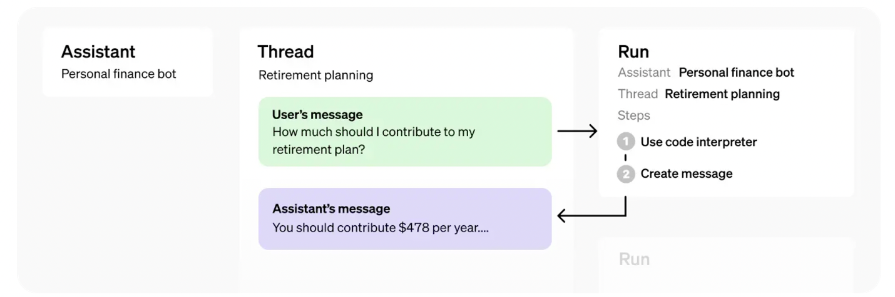

Assistant API的原理及应用¶
学习目标¶
- 理解什么是Assistant API
- 掌握基于Assistant API开发个人助手的思想
1 什么是Assistants API¶
2023 年 11月 6 号 OpenAI 在开发者大会上，发布了面向开发者的 Assistants API，Assistants API是一个开发者工具，它允许开发者在自己的应用程序中构建人工智能助手。这些助手根据指令 instructions 运作，并且可以利用模型 models 、工具tools 和知识库knowledge 来回应用户的查询。
当前，Assistants API支持三种类型的工具：
- 代码解释器
Code Interpreter - 检索（知识库集成）
Retrieval - 函数调用
Function calling
Assistants API和GPTs的区别和联系：
- 主要联系:
- 都基于 OpenAI 的大语言模型技术,如 GPT-4。
- 都可以通过指令、知识库等定制化功能。
- 都旨在为用户提供强大的 AI 助手体验,只是面向的对象和使用场景有所不同
- 区别：
- 开发体验:
GPTs通过ChatGPT界面的无代码方式创建,而Assistant API需要编写代码进行集成。GPTs位于ChatGPT内部,而Assistant API可集成到任何产品或服务中
- 用户体验:
GPTs用户直接使用ChatGPT界面,而Assistant API需要开发者构建自定义 UI。GPTs有内置的分享功能,而Assistant API没有。
2 Assistant API的原理¶
Assistants API 的核心概念和对象

- Assistant（助手）： 这是一个特定目的的人工智能助手，它使用OpenAI的模型并调用工具来执行任务。开发者可以构建Assistant来响应用户的特定需求。
- Thread（线程）： 这代表助手和用户之间的对话会话。线程存储消息，并自动处理内容截断，以适应模型的上下文限制。
- Message（消息）： 由助手或用户创建的消息。消息可以包括文本、图像和其他文件类型，并以列表形式存储在线程上。
- Run（运行）： 这是在线程上调用助手的一个实例。助手使用其配置和线程上的消息来通过调用模型和工具执行任务。作为运行的一部分，助手会向线程追加消息。
- Run Step（运行步骤）： 这是助手在运行过程中所采取的详细步骤列表。助手可以在其运行过程中调用工具或创建消息。检查运行步骤可以让你内省助手是如何得出其最终结果的。
实现`Assistant API的基本流程：
- 通过制定自定义的指令和选择一个模型，在 API 中创建一个 Assistant。如果需要，还可以启用代码解释器、信息检索和函数调用等工具。
- 用户开始交谈时，创建一个对话线程Thread。
- 用户提出问题时，向对话线程中添加消息 Message。
- 对对话线程执行运行Run动作，以激活 Assistant 的响应。这一过程会自动调用相关的工具。
注意，目前Assistant API 处于 beta 测试阶段，许多功能在不断完善和扩展。
3 Assistant API 实践应用¶
由于Openai的Assistant API需要借助科学上网的手段，以及服务不稳定，因此我们借助国产MiniMax开放平台来完成开发
应用背景：
- 基于MiniMax开放平台的Assistant API 开发一个水果收银助手，这里我们提前准备了一个fruit_price.txt的数据，来记录所有水果的成本和售价（虚构数据、不代表真实价格）
香蕉成本价2元一斤，售价为3元一斤。
橘子成本价1.5元一斤，售价为2.5元一斤
苹果成本价3元一斤，售价为3.5元一斤
芒果成本价5元一斤，售价为6元一斤
葡萄成本价2元一斤，售价为4元一斤
实现流程：
- 导入工具包
- 配置环境变量（API-KEY, GroupId）# 申请地址：https://platform.minimaxi.com/
- 上传文件
- 创建助手
- 创建线程
- 向线程里面添加消息
- 运行助手
- 获取助手处理出的新信息
完整代码：
3.1 导入工具包¶
# 发送HTTP请求的第三方库
import requests
# json数据格式
import json
# 时间
import time
import os
# 加载环境变量
from dotenv import load_dotenv, find_dotenv
3.2 配置环境变量¶
_ = load_dotenv(find_dotenv())
GroupId = os.environ['GroupId'] # MiniMax的GroupId
API_KEY = os.environ['API_KEY'] # MiniMax的API-Key
# headers用于设置HTTP请求的头信息。
# 头信息包含了客户端和服务器之间交换的元数据，用于描述请求或响应的性质。
headers = {
'Authorization': f'Bearer {API_KEY}', # 验证身份
'Content-Type': 'application/json' # 此字段指示请求体的数据格式是JSON
}
headers_retrieval = {
'Authorization': f'Bearer {API_KEY}',
'authority': 'api.minimax.chat', # 它指定了服务器的主机名或服务的网络地址
}
3.3 上传文件¶
# 流程零：上传文档
def create_file():
url = f"https://api.minimax.chat/v1/files/upload?GroupId={GroupId}"
data = {
'purpose': 'assistants'
}
files = {
'file': open('./fruit_price.txt', 'rb')
}
response = requests.post(url, headers=headers_retrieval, data=data, files=files)
return response.json()
3.4 创建助手¶
#流程一：创建助手
def create_assistant(file_id):
# file_id ---》文件的id
url = f"https://api.minimax.chat/v1/assistants/create?GroupId={GroupId}"
payload = json.dumps({
"model": "abab5.5-chat",# 模型版本
"name": "水果店财务助手", # 助手名称
"description": "水果店财务助手，用在水果销售过程中计算营业额", # 助手描述
"instructions": "是一个理财能手，根据每类水果的售出量以及单价，统计其成本和收入，计算出总利润",# 助手设定（即bot_setting)
"file_ids": [
str(file_id)
],
"tools": [{"type": "retrieval"}] # 使用MiniMax平台工具retrieval（知识库检索）
})
response = requests.post(url, headers=headers, data=payload)
return response.json()
可以通过配置以下参数，构建一个assistant得到对应的assistants id，以响应用户的请求：
- instructions：代表的是对assistant的背景设定；
- model：该接口目前支持abab5.5s-chat、abab5.5-chat、abab6.5-chat、abab6.5s-chat以及Finetune model: abab5.5-chat-240131、abab5.5s-chat-240123；
- tools：该接口在abab5.5-chat、abab6.5-chat、abab6.5s-chat、abab5.5-chat-240131下支持Code Interpreter（代码解释器）、Retrieval（知识库检索）、Function Calling（函数调用）、Web Search（网络搜索）功能，并支持开启多个工具，abab5.5s-chat、abab5.5s-chat-240123暂不支持。
如果使用了Retrieval，在创建assistant时可能会消耗几分钟的时间用于进行向量化和入库，在创建run时需要等待assistant创建完成，可以通过retrieve assistant 查看创建状态。
3.5 创建线程¶
def create_thread():
url = f"https://api.minimax.chat/v1/threads/create?GroupId={GroupId}"
response = requests.post(url, headers=headers)
return response.json()
3.6 向线程里面添加消息¶
def add_message_to_thread(thread_id):
# thread_id --->线程对应的id
url = f"https://api.minimax.chat/v1/threads/messages/add?GroupId={GroupId}"
payload = json.dumps({
"thread_id": thread_id,
"role": "user",
"content": "我卖了2斤葡萄，3斤半的香蕉，2斤苹果，计算下总成本和总收入，给出具体的计算过程",
})
response = requests.post(url, headers=headers, data=payload)
return response.json()
3.7 运行助手¶
def run_thread_with_assistant(thread_id, assistant_id):
time.sleep(200) #创建assistants进行向量化以及存储时需要一定的时间，可以考虑使用retrieve assistant检索是否创建成功
url = f"https://api.minimax.chat/v1/threads/run/create?GroupId={GroupId}"
payload = json.dumps({
"thread_id": thread_id,
"assistant_id": assistant_id
})
response = requests.post(url, headers=headers, data=payload)
return response.json()
要使创建的assistant响应用户的请求消息，您还需要创建一个run来运行，请确保您的assistant id和thread id 都已创建完成。
此时assistant将会读取thread并决定是否调用工具（若构建assistant时工具已启用）。
随着run的进行，assistant会将模型回复的message添加到thread中。
3.8 查看运行状态¶
def check_thread_run_status(thread_id, run_id):
url = f"https://api.minimax.chat/v1/threads/run/retrieve?GroupId={GroupId}"
payload = json.dumps({
"thread_id": str(thread_id),
"run_id": str(run_id)
})
completed = False
while not completed:
response = requests.request("GET", url, headers=headers, data=payload)
if response.status_code == 200:
response_data = response.json()
status = response_data.get('status', '')
print(f"Status: {status}")
if status == 'completed':
completed = True
print("Process completed, exiting loop.")
else:
time.sleep(2) # 如果状态不是completed，等待两秒后重新请求
else:
print(f"Error: {response.status_code}")
break # 如果请求失败，退出循环
return completed
在默认的情况下，创建的run将进入排队状态。您可以定期检索run id的运行状态，以查看它是否运行完成。
3.9 查看回复内容¶
def get_thread_messages(thread_id):
url = f"https://api.minimax.chat/v1/threads/messages/list?GroupId={GroupId}"
payload = json.dumps({
"thread_id": thread_id
})
response = requests.get(url, headers=headers, data=payload)
return response.json()
创建的run id运行完成后，您可以列出assistant添加到thread的用户message来查看请求回复的内容。
3.10 主流程¶
def main():
# 上传文档
file_response = create_file()
print(f'file_response--》{file_response}')
file_id = file_response.get('file', {}).get('file_id')
print("file_id:",file_id)
# 创建助手
assistant_response = create_assistant(file_id)
print(f'assistant_response-->{assistant_response}')
assistant_id = assistant_response.get('id', '')
print("assistant_id:",assistant_id)
# 创建线程
thread_response = create_thread()
thread_id = thread_response.get('id', '')
print("thread_id:",thread_id)
# 往线程里添加信息
add_message_to_thread(thread_id) # 不保存返回值
# 运行助手
run_response = run_thread_with_assistant(thread_id, assistant_id)
run_id = run_response.get('id', '') # 假设run_response是正确的JSON响应，并包含run_id
print("run_id:", run_id)
# 检查助手处理状态
if check_thread_run_status(thread_id, run_id):
# 获取线程中助手处理出的新信息
thread_messages_response = get_thread_messages(thread_id)
# 打印JSON数据
print(json.dumps(thread_messages_response, indent=4, ensure_ascii=False))
if __name__ == "__main__":
main()
结果展示：
{
"object": "list",
"data": [
{
"id": "msg_e63a659228864dbf8bd19abe25e40c07",
"object": "message",
"created_at": 1717032920,
"thread_id": "thread_a2724d238aff451280664d0be240b7d0",
"role": "user",
"content": [
{
"type": "text",
"text": {
"value": "我卖了2斤葡萄，3斤半的香蕉，2斤苹果，计算下总成本和总收入，给出具体的计算过程",
"annotations": []
}
}
],
"file_ids": null,
"assistant_id": "asst_89dd2c1b187b40cbb5f23f91d9a4bb13",
"run_id": "run_5b6ecc675e6c41fbbe1e45526b19bfa8",
"metadata": null
},
{
"id": "msg_ba639b025d7940fabf0f798d5556c444",
"object": "message",
"created_at": 1717033136,
"thread_id": "thread_a2724d238aff451280664d0be240b7d0",
"role": "ai",
"content": [
{
"type": "text",
"text": {
"value": "根据上述信息，可以计算出总成本和总收入。\n\n首先，我们需要知道各类水果的成本和售价，根据查询结果，我们可以知道：\n- 葡萄的成本价为2元/斤，售价为4元/斤；\n- 香蕉的成本价为2元/斤，售价为3元/斤；\n- 苹果的成本价为3元/斤，售价为3.5元/斤。\n\n然后，我们可以计算总成本和总收入：\n- 2斤葡萄的总成本 = 2斤 * 2元/斤 = 4元；\n- 3斤半的香蕉的总成本 = 3.5斤 * 2元/斤 = 7元；\n- 2斤苹果的总成本 = 2斤 * 3元/斤 = 6元。\n\n总成本 = 4元 + 7元 + 6元 = 17元。\n\n- 2斤葡萄的总收入 = 2斤 * 4元/斤 = 8元；\n- 3斤半的香蕉的总收入 = 3.5斤 * 3元/斤 = 10.5元；\n- 2斤苹果的总收入 = 2斤 * 3.5元/斤 = 7元。\n\n总收入 = 8元 + 10.5元 + 7元 = 25.5元。\n\n最后，我们可以计算出总利润：\n总利润 = 总收入 - 总成本 = 25.5元 - 17元 = 8.5元。\n\n所以，你总共赚了8.5元。",
"annotations": []
}
}
],
"file_ids": null,
"assistant_id": "asst_89dd2c1b187b40cbb5f23f91d9a4bb13",
"run_id": "run_5b6ecc675e6c41fbbe1e45526b19bfa8",
"metadata": null
}
],
"first_id": "msg_e63a659228864dbf8bd19abe25e40c07",
"last_id": "msg_ba639b025d7940fabf0f798d5556c444",
"base_resp": {
"status_code": 0,
"status_msg": "success"
}
}